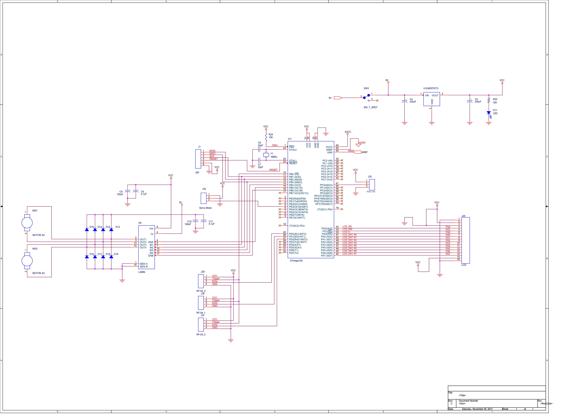
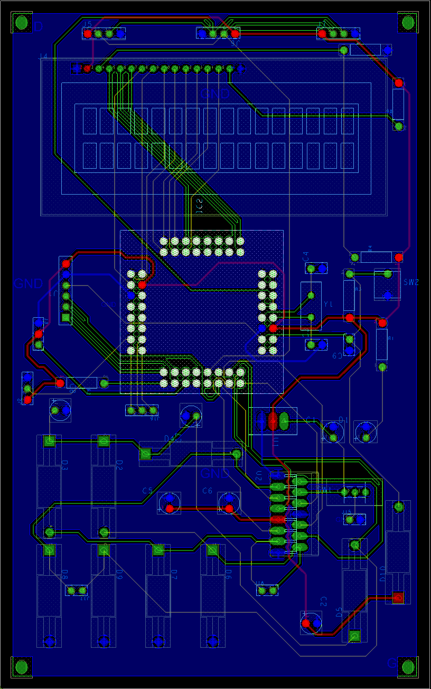

Autonomous RC car
Intro
| Develop Period |
2017.10 ~ 2018.12
|
|
|
∎ It is designed to implement this technology similar to self-driving cars according to the trend of the fourth industrial revolution.
|
|
|
∎ Stop and reverse when an obstacle is detected via the sensor.
∎ Driving through traffic light detection.
∎ Safe driving with lane detection.
|
|
|
∎ Hardware (RC car) - PCB substrate - Motor (AC,DC) - Sensor (infrared lines, ultrasonic waves) - LCD, ISP, ATmega128, L298N, Crystal, bar resistance, Capacitor
∎ Software
- Language : C language - Program : Hyperterminal, AVR Studio |
|
|
∎ Designed to detect and stop signals and to detect and avoid driving, obstacles along lanes.
|
Circuit diagram
Result


∎ Built by designing boards with pcb editor.